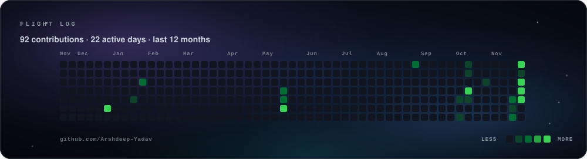

Preview of README.md. Commit this folder to a public repo named Arshdeep-Yadav and GitHub renders it on your profile.


Moons in orbit
Constellation

Flight log

Signal me

Email · Portfolio · LinkedIn · GitHub · +91 81152 37909
Live counts from GitHub's public API · refreshed on page load
Hand-built in SVG — orbits, cards and this page all generated from one Python file